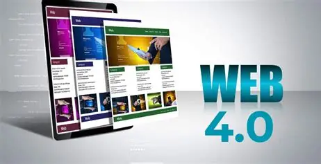

Web 4.0

Web 4.0 is considered the next evolution of the internet, often described as
the "intelligent web" or "symbiotic web." It focuses on seamless interaction
between humans and machines in real time.
This stage of the web integrates advanced technologies such as artificial
intelligence, the Internet of Things (IoT), and real-time data processing to
create highly connected and responsive systems.
Characteristics of Web 4.0
Fully intelligent and autonomous systems
Real-time interaction between users and machines
Integration with IoT (smart devices)
Highly personalized and predictive services
Ubiquitous connectivity (access anywhere, anytime)
Examples of Web 4.0
- Smart homes and connected devices
- Autonomous vehicles
- Advanced AI-driven virtual assistants
Advantages
- Improves automation and efficiency
- Provides real-time, intelligent responses
- Enhances user experience through prediction
- Connects multiple devices and systems seamlessly
Limitations
- High dependence on advanced technology
- Privacy and security challenges
- High development and infrastructure costs
In summary, Web 4.0 aims to create a fully intelligent and connected digital
environment where machines and humans interact seamlessly in everyday life.